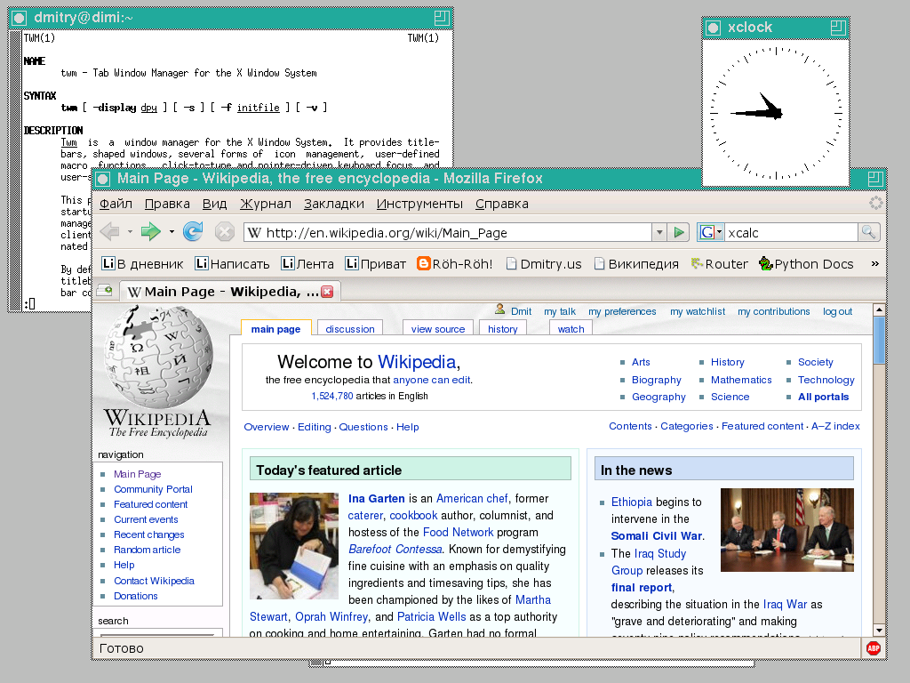

Вперед в будущее:
Wayland vs X11
Железцов Н. и Ясенко Д.
ИУ8-74
Display server
Дисплей сервер - это программа, обеспечивающая стандартные инструменты и протоколы для построения графического интерфейса пользователя.
Дисплей сервер общается с клиентами по какому либо протоколу (Wayland или X11)


История иксов
Как работает X
X Window System — дисплей протокол, появившийся в 1984.
X11 — последняя версия X Window System, появивишаяся в 1987.
X.Org Server — каноничная реализация серверной части X Window System
Xlib — каноничная реализация клиентской части X Window System

Недостатки X11
- Бесполезный посредник
- Отсутствие изоляции приложений и небезопасность
- Устаревшая кодовая база, невозможно работать
- Сложности работы с несколькими мониторами
- Отсутствие поддержки VRR
- Неплавность анимаций
- Тиринг
- И т.д.
Как работает Wayland